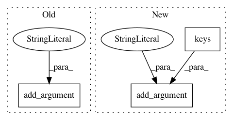

02c0ef855321a2c9e681927b9cdaf0996c310893,tools/batch/submit-job.py,,,#,11
Before Change
parser.add_argument("--region", help="Default region when creating new connections", type=str,
default=None)
parser.add_argument("--name", help="name of the job", type=str, default="dummy")
parser.add_argument("--job-type", help="type of job to submit.", type=str,
choices=["g4dn.4x", "g4dn.8x", "g4dn.12x", "g4dn.16x",
"p3.2x", "p3.8x", "p3.16x", "p3dn.24x",
"c5n.18x", "c5n.4x"], default="g4dn.4x")
parser.add_argument("--source-ref",
help="ref in GluonNLP main github. e.g. master, refs/pull/500/head",
type=str, default="master")
parser.add_argument("--work-dir",
After Change
parser.add_argument("--region", help="Default region when creating new connections", type=str,
default=None)
parser.add_argument("--name", help="name of the job", type=str, default="dummy")
parser.add_argument("--job-type", help="type of job to submit.", type=str,
choices=instance_type_info.keys(), default="g4dn.4x")
parser.add_argument("--source-ref",
help="ref in GluonNLP main github. e.g. master, refs/pull/500/head",
type=str, default="master")
parser.add_argument("--work-dir",
In pattern: SUPERPATTERN
Frequency: 3
Non-data size: 3
Instances
Project Name: dmlc/gluon-nlp
Commit Name: 02c0ef855321a2c9e681927b9cdaf0996c310893
Time: 2020-10-14
Author: xshiab@connect.ust.hk
File Name: tools/batch/submit-job.py
Class Name:
Method Name:
Project Name: chainer/chainercv
Commit Name: 0557b8abe6df2bae50bbda83478762ab96ec25ba
Time: 2019-05-17
Author: shingogo@hotmail.co.jp
File Name: examples/semantic_segmentation/eval_semantic_segmentation_multi.py
Class Name:
Method Name: main
Project Name: chainer/chainercv
Commit Name: 7d96731b9a50e5455a1e31f676508af42801b7ae
Time: 2019-01-23
Author: 69guitar1015@gmail.com
File Name: examples/deeplab/tf2npz.py
Class Name:
Method Name: main